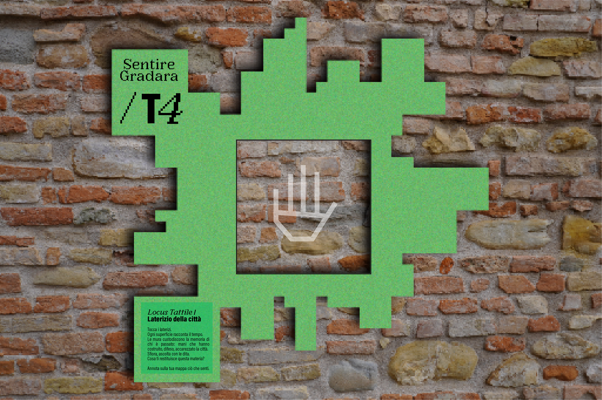
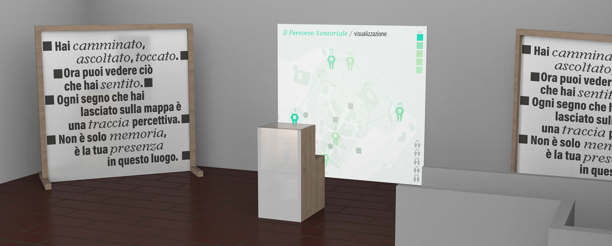

Feeling Gradara is a site-specific interactive exhibit that transforms individual sensory experiences into a shared emotional cartography. Set in the medieval village of Gradara, the project invites visitors to explore the town through touch and sound, collecting personal perceptions along the way. These sensory traces are later translated into dynamic visual and sound-based projections, merging into a collective map that visualizes the layered memories of all participants. By combining physical exploration and real-time digital interaction, the exhibit turns the village into a living mnemonic landscape, where memory is not archived but actively constructed and shared.
The research began with the study of the Young Fund, a unique collection dedicated to mnemonic systems. The archive reveals how memory has long been conceived as a spatial and embodied entity rather than a purely mental one. The project reinterprets this material to transform the village of Gradara into an "open-air memory palace," where remembering becomes an active, perceptual process.
In the first phase, visitors explore the village equipped with a blank paper map. Through various sensory loci, they are invited to interact with tactile surfaces and auditory stimuli. The map ceases to be a tool for orientation and becomes a mnemonic device: every mark left on it is a physical trace of the visitor's presence and sensations within the space.

Inside the exhibition space, the individual maps are analyzed by an image-recognitio system. These analog annotations are translated into dynamic projections, turning the su bjective path into a visual trajectory. Personal data evolves into an emotional landscape generated directly from the perceptions recorded during the walk.
The experience culminates in a collective map projected onto the floor, where individual sensory intensities aggregate into interactive heatmaps. Visitors can activate sounds, videos, and emotional filters, contributing to a shared affective cartography. In "Sentire Gradara, " memory returns to being a bodily, shared, and deeply creative act.
